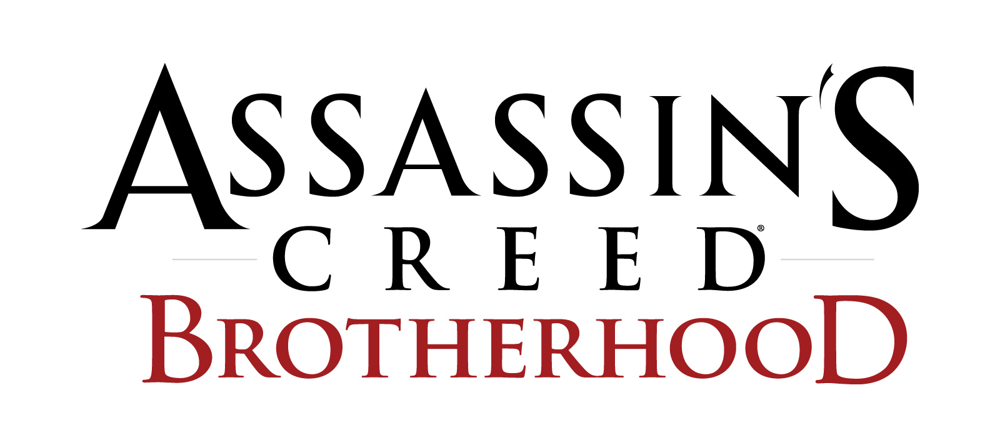

TITOLO: Assassin's Creed: Brotherhood
SVILUPPO: Ubisoft Montreal, Ubisoft Bucarest, Ubisoft Québec, Ubisoft Annecy
DATA DI USCITA: 16 novembre 2010 (PS3 e Xbox360), 17 marzo 2011(PC)
COLLOCAMENTO STORICO: Rinascimento italiano
AMBIENTAZIONI: Roma
TRAMA:La storia riprende da dove si era concluso Assassin's Creed II: Ezio Auditore fugge dal Vaticano con lo zio Mario, subito dopo aver sconfitto Rodrigo Borgia ed essere entrato nella cripta, dove Minerva attraverso di lui invia un messaggio a Desmond Miles, esortandolo a trovare tutti i Templi con i Frutti dell'Eden prima del 21 dicembre 2012.
Tuttavia, il giorno dopo il ritorno di Ezio a Monteriggioni, le truppe papali guidate da Cesare Borgia, il figlio di Rodrigo Borgia, assediano la città. Monteriggioni, assieme a Villa Auditore, viene danneggiata e Mario viene ucciso per mano di Cesare. Ezio, ferito da tre colpi di archibugio, fugge assieme alla popolazione da una galleria sotto al Santuario. In cerca di vendetta, Ezio torna a Roma per sconfiggere i Borgia una volta per tutte.
Nel frattempo Shaun, Rebecca, Lucy e Desmond giungono nell'odierna Monteriggioni, tentando di entrare nel Santuario di Villa Auditore, ma non riescono ad entrare perché il passaggio è bloccato. Una volta entrati grazie alla galleria che Ezio usò per fuggire, Desmond rientra nell'Animus e torna ad accedere ai ricordi del suo antenato italiano.
Ciò che Ezio trova a Roma va al di là di ogni sua aspettativa. La città eterna è avvolta dal degrado per via della politica egoista e spietata dei Borgia, che soffoca e rovina tutta la città. Ad Ezio, quindi, spetterà il compito di liberare tutte le zone di Roma oppresse dai Borgia, distruggendo le torri tramite cui la famiglia del Papa controlla la città, contribuendo così alla rinascita delle botteghe e il restauro di monumenti importanti come il Colosseo o il Pantheon.
Dopo esser venuto a sapere di Caterina Sforza, catturata da Cesare, dalle gilde alleate (secondo cui Caterina sarebbe a Castel Sant'Angelo), Ezio decide di infiltrarsi nel castello con l'obiettivo di uccidere sia Rodrigo che Cesare. Tuttavia, Cesare ha già lasciato il castello per la conquista di Urbino, mentre Rodrigo non è presente. Ezio riesce a salvare però Caterina e a rinchiudere Lucrezia Borgia, (sorella di Cesare, con cui ha una relazione) nella cella della Sforza.
Mentre fa ritorno al covo, Ezio incontra Leonardo Da Vinci, costretto a lavorare per Cesare, che gli progetta nuove armi in cambio del suo aiuto nel distruggere le macchine belliche progettate da lui per i Borgia. Questo incarico lo porterà a compiere missioni sui Colli Albani, a Napoli, nella Valnerina, e sul Monte Circeo. Ezio decide di sfaldare l'influenza dei Borgia su Roma. Tornato al Covo, Ezio, assieme al suo Gran Maestro Niccolò Machiavelli, decide di ricostruire la Confraternita degli Assassini a Roma. Reclutati degli adepti, Ezio scova il suo primo bersaglio: Juan Borgia il Maggiore, banchiere di Cesare, che viene ucciso durante una manifestazione dove sono presenti sia Rodrigo che suo figlio. Dopo Juan, ora è il turno del barone francese Octavian de Valois, nemico di Bartolomeo ed alleato militare di Cesare. Octavian riesce a rapire la moglie di Bartolomeo, Pantasilea Baglioni, e nel tentativo riuscito di salvarla, Ezio uccide Octavian. In seguito, viene informato che Pietro Rossi, un attore che Lucrezia Borgia utilizza come pedina per ingelosire Cesare, ha con sé la chiave per entrare a Castel Sant'Angelo, ed Ezio vuole recuperarla, ma Cesare intende uccidere Pietro mandando il suo sicario Micheletto. Pietro è impegnato in una recita della Passione nel Colosseo, e Micheletto decide di avvelenare il vino che durante la recita l'uomo assaggia. Ezio si infiltra tra gli attori assieme ai suoi adepti, vestendosi da centurioni, e riesce a salvare l'attore portandolo da un medico, e decide di risparmiare Micheletto.
Dopo aver preso da Pietro la chiave del castello, Ezio, sotto consiglio di Machiavelli, si reca ad uccidere definitivamente Cesare e Rodrigo Borgia; quest'ultimo viene però ucciso dallo stesso Cesare che lo soffoca mettendogli una mela avvelenata in bocca, la stessa arma che Rodrigo voleva usare per togliere di mezzo il figlio. Ezio fa così intrusione nella dimora, dove apprende da Lucrezia Borgia, ormai sotto shock, l'ubicazione del Frutto dell'Eden (il Cortile del Belvedere) e, dopo averla presa, la usa per neutralizzare le ultime forze di Cesare Borgia. Dopo un'ultima battaglia tra gli Assassini e gli ultimi soldati fedeli a Cesare, quest'ultimo viene arrestato da Fabio Orsini con le accuse di omicidio e di incesto. Ezio, consultando la Mela, va a Viana, dove ha la meglio su Cesare e lo getta dalla muraglia, lasciandolo nelle mani del fato. Tornato a Roma, nasconde la Mela dell'Eden all'interno di un Tempio sotto Santa Maria in Aracoeli, accessibile da una galleria segreta sotto al Colosseo: il Tempio di Giunone. Ha poi continuato il suo incarico come Gran Maestro dell'Ordine degli Assassini a Roma.
Desmond e gli altri assassini conoscono finalmente il nascondiglio della Mela dell'Eden, e partono per Roma. Il primo, quindi, entra nella galleria sotto al Colosseo, uscendone fuori a Santa Maria in Aracoeli, dove si ricongiunge con i compagni. Attivato una specie di ascensore nascosto nel pavimento, la squadra entra nel Tempio di Giunone, dove trovano la Mela. Tuttavia, appena Desmond la tocca, la dea Giunone prende il controllo del suo corpo. Desmond non riesce a reagire ed è costretto a pugnalare con la lama celata Lucy, che cade a terra in un bagno di sangue, morta. Partono i titoli di coda, durante i quali si sentono le voci di due uomini che decidono di mettere Desmond sotto shock dentro l'Animus, nonostante la riluttanza del primo. Attraverso il DLC La Scomparsa di Da Vinci, si può notare che, a un certo punto, uno dei due uomini in questione chiamerà l'altro William, l'uomo a cui scrive Lucy, nelle sue e-mail.
ARMI:
Lama Celata: L'immancabile Lama Celata di Ezio, icona degli Assassini. Inizialmente ne avrà due, ma, dopo aver perso la prima durante l'assedio di Monteriggioni, la seconda sarà acquistabile da Leonardo da Vinci, che la riadatterà ricordandosi dei vecchi progetti del Codice di Altair.
Lama e Dardi avvelenati:La Lama Avvelenata è la stessa vista nel precedente capitolo, mentre i dardi sono un'ulteriore aggiunta al meccanismo. Ezio la otterrà dopo uno dei suoi incontri con Leonardo. Si tratta di un meccanismo che permette ad Ezio di sparare dardi avvelenati, senza correre il rischio di allarmare il bersaglio.
Spade e martelli: Le armi classiche della serie. I modelli delle spade e dei martelli sono per la maggior parte nuovi, ma torneranno anche alcuni modelli del capitolo precedente.
Spada corta: L'arma più veloce ed agile del gioco. Essa è in grado di eliminare un alto numero di nemici in poco tempo. La sua mossa speciale consiste di lanciare pugnali da lancio in combattimento, mentre Ezio finisce una guardia con la spada corta. In base a quanti ne possederà Ezio (si può aumentarne il numero comprando dalla Sartoria gli ampliamenti dei foderi) potrà eliminare istantaneamente più guardie.
Balestra: Una nuova arma per ampliare l'arsenale di Ezio. Essa può portare con sé fino ad un massimo di 25 dardi, recuperabili dai cadaveri delle guardie uccise o acquistabili dal fabbro. Essa ha una gittata inferiore della pistola, ma uccide più silenziosamente.
Pugnali da lancio: Utili per eliminare silenziosamente gli arcieri, dotati di balestra, e gli archibugieri. Inizialmente ne possono essere portati solo 5 per volta, ma comprando le espansioni della cinta dei pugnali dal Sarto, se ne può arrivare fino ad un massimo trasportabile di 25.
Guanto da scalata: Può essere acquistato da Leonardo: è in grado di far scalare le pareti con più velocità, grazie al ripristino dell'abilità del salto ascensionale ad Ezio. Inoltre, funziona nei combattimenti a mano nuda da tirapugni.
Bombe fumogene: Acquisite già nel capitolo precedente saranno acquistabili come qualunque munizione da un fabbro, non prima di aver equipaggiato la borsa per le bombe fumogene.
Mela dell'Eden: L'ultima arma che si ottiene nel gioco, utilizzabile solo nella sequenza 8, essa permette di uccidere all'istante i bersagli più deboli, farli impazzire, oppure confonderli e farli combattere tra di loro. L'unico svantaggio è che utilizzandola ripetutamente indebolirà la sincronia di Ezio, che la recupererà non usando la Mela per un breve lasso di tempo.
Armi a due mani: Spada lunga, Ascia barbuta, Spadone. Al contrario di Assassin's Creed II dove le armi a due mani potevano essere sottratte ai Bruti o agli Investigatori e venire usate per un ridotto periodo di tempo, adesso sono acquistabili dai fabbri. Per utilizzarle bisogna però acquistare il "Fodero pesante" dal Sarto
Armi bonus: Sono presenti delle armi bonus che si otterranno completando le sfide di gilda